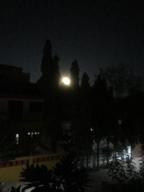

Moon from my window

Sharing this picture of a beautiful sight,
In a clear sky moon was very bright.
Saw it from my window and jumped in delight,
Stood dumb-struck watching it at midnight.
The night was very calm and silent,
Wind was not in the least violent.
The crescent shaped moon was dominating the environment,
Believe me it was an electrifying moment.
The Asopalav trees my neighbour had planted,
Grew very tall and left me enchanted.
They must surround the house is what was wanted,
Their towering structure could not have been supplanted.
Between two tall Asopalav trees,
The moon was directly gleaming at me.
Got soaked in an aura of tranquility,
Stood unmoving in peace and serenity.
Though not a professional photographer,
I clicked this picture like an amateur.
It is a very hazy miniature,
Of a celestial occurrence in nature.
Seeing the beauty of the moon,
My imagination got provoked very soon.
Wishing I could float like a balloon,
To a distant land for an endearing honeymoon.